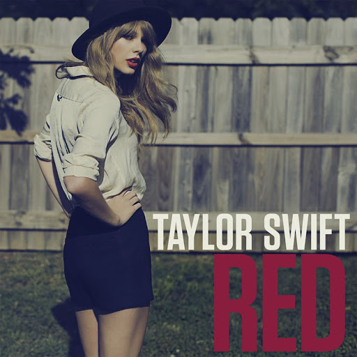

Loving him is like
Driving a new Maserati down a dead-end street
Faster than the wind
Passionate as sin
Ending so suddenly
Loving him is like
Trying to change your mind once you're already flying through the free fall
Like the colors in autumn, so bright
Just before they lose it all
Losing him was blue like I'd never known
Missing him was dark grey, all alone
Forgetting him was like trying to know somebody you never met
But loving him was red (re-e-e-ed, re-e-e-ed)
(Re-e-e-ed, re-e-e-ed)
Loving him was red (re-e-e-ed, re-e-e-ed)
(Re-e-e-ed, re-e-e-ed)
Touching him was like
Realizing all you ever wanted was right there in front of you
Memorizing him was as
Easy as knowing all the words to your old favorite song
Fighting with him was like
Trying to solve a crossword and realizing there's no right answer
Regretting him was like
Wishing you never found out that love could be that strong
Losing him was blue like I'd never known
Missing him was dark grey, all alone
Forgetting him was like trying to know somebody you never met
But loving him was red (re-e-e-ed, re-e-e-ed)
Oh, red (re-e-e-ed, re-e-e-ed)
Burning red (re-e-e-ed, re-e-e-ed)
(Re-e-e-ed, re-e-e-ed)
Remembering him comes in flashbacks
And echoes
Tell myself it's time now
Gotta let go
But moving on from him is impossible
When I still see it all in my head
In burning red
Burning it was red
Oh, losing him was blue like I'd never known
Missing him was dark grey, all alone
Forgetting him was like trying to know somebody you never met
'Cause loving him was red (re-e-e-ed, re-e-e-ed)
Yeah, yeah, red (re-e-e-ed, re-e-e-ed)
Oh, burning red (re-e-e-ed, re-e-e-ed)
(Re-e-e-ed, re-e-e-ed)
And that's why he's spinning 'round in my head (re-e-e-ed, re-e-e-ed)
Comes back to me, burning red (re-e-e-ed, re-e-e-ed)
Yeah, yeah (re-e-e-ed, re-e-e-ed)
His love was like